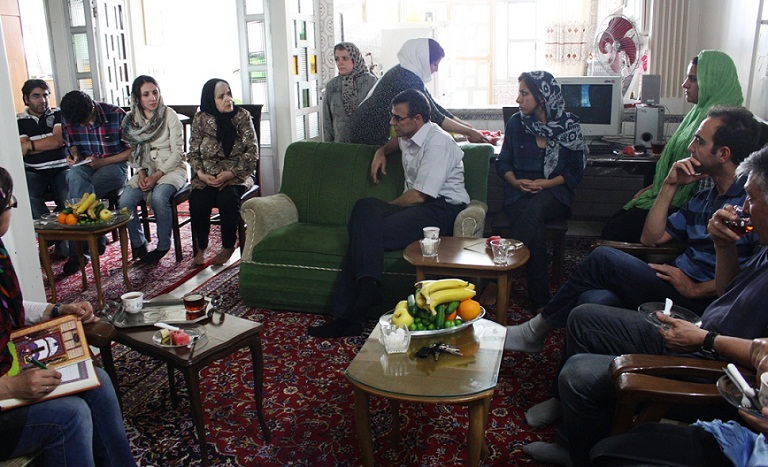
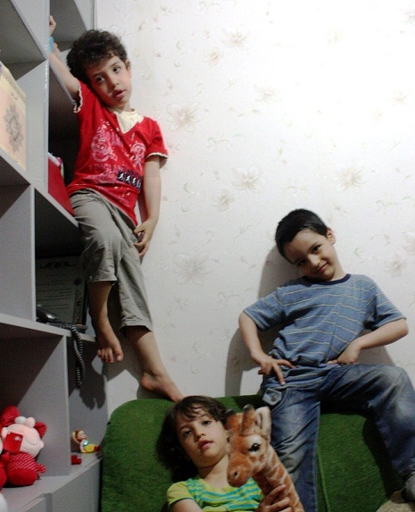
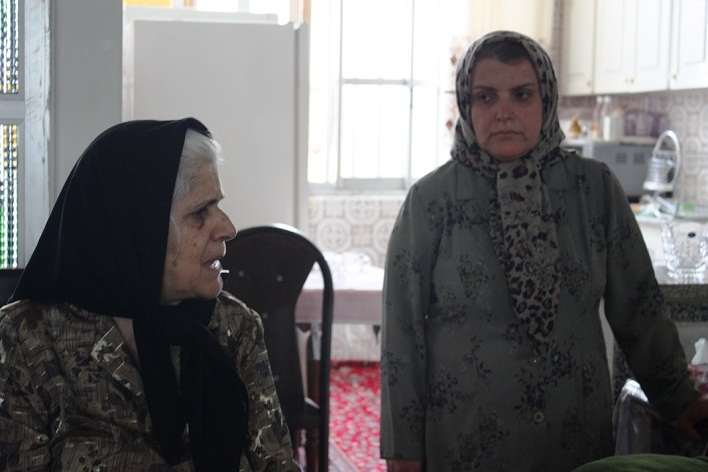
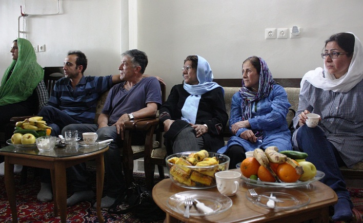

|
|

دیدار فعالان مدنی با خانواده نرگس محمدی
دو شنبه8 خرداد 1391
تا قانون خانواده برابر: روز جمعه پنجم خرداد جمعی از فعالان جنبش زنان و جنبش دانشجویی برای دیدار با خانواده آقای رحمانی و فرزندان نرگس محمدی به منزل مادر تقی رحمانی رفتند.

در این دیدار خانواده آقای رحمانی ضمن تشکر از حضور میهمانان به درخواست آن ها درباره وضعیت نرگس پس از انتقال به زندان زنجان گفتند: نرگس پس از انتقال به زنجان تا کنون یک بار با بچه ها ملاقات حضوری داشته است و دو بار هم تلفنی با علی و کیانا صحبت کرده است . نرگس هم اکنون در بند عمومی زندان زنجان است و به این وضعیت اعتراض دارد. نرگس خواهان ملاقات با وکیل است .قبل از انتقال به زندان زنجان نرگس دو روز در بهداری اوین بستری بوده و بعد از آن او را به زنجان منتقل می کنند.
وضعیت روحی و روانی نرگس و فرزندانش دغدغه بعدی حاضران بود که خانم رحمانی در ادامه به وضعیت روحی نرگس اشاره کرد و گفت: جدا کردن بچه ها از نرگس بسیار سخت بوده است و علی و کیانا خیلی بی تابی می کنند . زمانی هم که برای ملاقات با نرگس می رویم بعد از آن بچه ها بی تابی می کنند و چند روزی طول می کشد تا دوباره آرام شوند. همچنین بعد از تلفن های نرگس حال بچه ها بد می شود و شب از خواب می پرند و بی تابند. او ادامه داد: خانم ماموری که می خواست نرگس را بعد از ملاقات به بند ببرد با دیدن بی تابی و گریه بچه ها خود نیز گریه اش گرفت.

خانم رحمانی افزود: وضعیت روحی نرگس نسبت به قبل بهتر شده است. یکبار وثیقه 500 میلیونی از ما خواسته اند تا به او مرخصی بدهند که برای ما مقدور نیست چون ما تا حالا 4 وثیقه گذاشته ایم ؛ دو تا برای نرگس و دو تا برای تقی که هیچ یک را تا به حال آزاد نکرده اند حتی اکنون که نرگس در زندان است.
سپس درباره علت انتقال خانم محمدی از اوین به زندان زنجان سوال شد که خانم رحمانی گفتند به نظرم از سر لجبازی است و می خواهند اذیت کنند. نرگس در این بند در معرض خطر است چرا که در این بند افرادی حضور دارند که به دلایل مختلف مثل قتل، اعتیاد... زندانی شده اند . بند عمومی وضعیت بدی دارد در بند حتی یک یخچال هم ندارند تا مواد غذایی در آن نگه دارند و امکانات این زندان در حد بسیار نازلی است. کلی محکوم به اعدام در این زندان وجود دارد و کسانی هم هستند که مبتلا به ایدز هستند و توسط بقیه بایکوت شده اند.

یکی از حاضران درباره پیگیری هایی که تا کنون درباره نرگس محمدی شده پرسید که محترم رحمانی پاسخ داد: خانواده نرگس در زنجان برای انتقال او به زندان اوین تلاش کرده اند و سعی کرده اند که ملاقاتی با پزشک معالج نرگس بخاطر وضعیت جسمی اش بگیرند چون تنها پزشک نرگس از وضعیتش آگاه است. مسئولان زندان زنجان هم گفته اند همین جا زشک است منتهی نرگس گفته این پزشکان بابیماری من آشنایی ندارند و من باید به پزشک معالج خودم مراجعه کنم.
مادر آقای رحمانی همچنین درباره این انتقال گفت: به وکیل نرگس گفته اند زندانیان قطعی را در اوین نگهداری نمی کنیم پس ممکن است نرگس به زنجان یا ورامین منتقل شود و همین کار را کردند. نرگس هم گفته این طور نیست دادگاه در تهران حکم داده است و محل آن هم اوین است. همچنین اعتراض کرده که اگر من حکمم را می گذرانم چرا باید در انفرادی باشم.

در پایان حاضران برای آزادی نرگس اظهار امیدواری و آرزو کردند هرچه زودتر نرگس محمدی را در کنار خانواده و فرزندان خود ببینند.